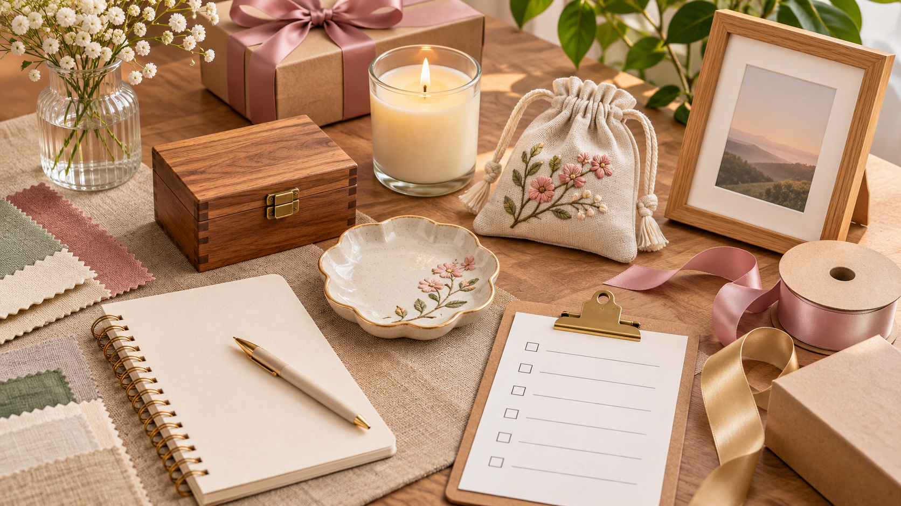
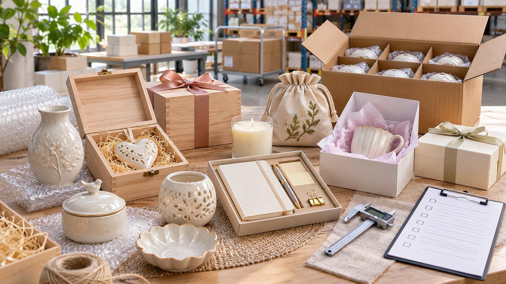

Direct answer: Current gifting signals favour personal, tactile and story-led products: keepsakes, journals, small crafted décor, customisable pieces and gift-ready sets. Turn that into a controlled order by defining the occasion, recipient, customisation method, material, final artwork, retail presentation and breakage protection before approval.

1. Build an occasion-led gift assortment
In 2026, buyers are responding to gifts that feel meaningful, tactile and recipient-specific. Rather than ordering an unfocused mix, choose one use case: a celebration keepsake, desk gift, travel journal set, handmade-style home accent or small self-care present. Combine one hero item with a complementary insert, wrap or card so the product is easy to understand online and in store.
Personalisation only works when it is operationally clear. State whether names, initials, artwork, colours or messages vary by order; who approves the final file; and what happens when an artwork change arrives after production begins.
2. Put material, artwork and packaging in the same brief
For ceramic, wood, paper, textile, glass or candle giftware, a similar listing image can hide meaningful differences in finish, size, components and fragile packing. Include material, dimensions, colour, finish, customisation method, legal/IP ownership of supplied artwork, retail pack, insert, carton quantity and destination in the RFQ.
| Control point | Buyer action |
|---|---|
| Artwork and personalisation | Approve the final production file, spelling, position and colour before production. |
| Material and finish | Check texture, coating, stitching, glaze or print against the approved sample. |
| Gift presentation | Approve box, tissue, pouch, ribbon, insert and any card as one retail set. |
| Fragile protection | Specify separators, sleeves, foam or inner cartons for breakable items. |
3. Protect original designs and truthful claims
Do not source copied characters, logos or “inspired” branded designs without written authority. Keep claims about handmade methods, sustainability, origin, food contact, flame safety or material performance accurate and supported for the target market. A sourcing agent can collect supplier details and coordinate samples, but cannot grant intellectual-property rights or legal compliance.

4. Inspect the finished set, then the carton
QC should follow the approved sample and packing brief: material finish, dimensions, artwork/version, closures, visible defects, pack completeness, gift-ready presentation, carton count and crush or breakage protection. Inspect more than one carton, especially where customised components or mixed suppliers are involved. Use the pre-shipment inspection checklist and carton-marks guide before export handoff.
Frequently asked questions
Which gift and craft products are practical for a first order?
Start with a narrow gifting occasion and a coherent set: a keepsake box with card, a stationery kit, a candle accessory or small decorative gift. Approve material, finish, customisation method and protective packaging before scaling.
What should giftware QC include?
Check material finish, dimensions, custom artwork version, closures, visible defects, breakage protection, pack completeness, gift presentation, carton count and carton protection against the approved sample.
Build a controlled giftware RFQ
Send product references, recipient/occasion, customisation details, quantity, pack needs and timing for an initial sourcing review.